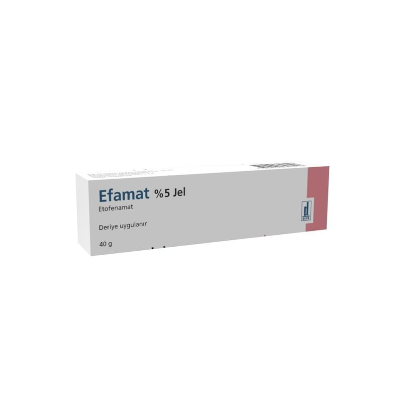

Efamat %5 Jel, 40 g

Ne için kullanılır
KT · Bölüm 1EFAMAT, şeffaf, karakteristik kokulu, yarı katı jel içeren, dış yüzü baskılı, iç yüzü lakla kaplı, 40 g’ lık aluminyum tüp içerisinde kullanıma sunulmaktadır. EFAMAT, etkin madde olarak etofenamat içerir. Etofenamat, steroid olmayan (kortizonsuz) anti-romatik (romatizma tedavisi) ilaçlar grubundandır ve iltihap/inflamasyon giderici (anti-inflamatuvar) ve ağrı kesici (analjezik) özelliklere sahiptir. EFAMAT, aşağıdaki durumların tedavisinde kullanılır:
Spor yaralanmaları gibi kunt travmalardan sonra el ve ayaklardaki akut ezilme, burkulma ve zorlanmalara bağlı ağrılı durumlar. Diz eklemi iltihabı durumlarında, eklem çevresi yumuşak dokulardaki (bursa, tendon, bağlar ve eklem kapsülü) ağrılı durumlar.